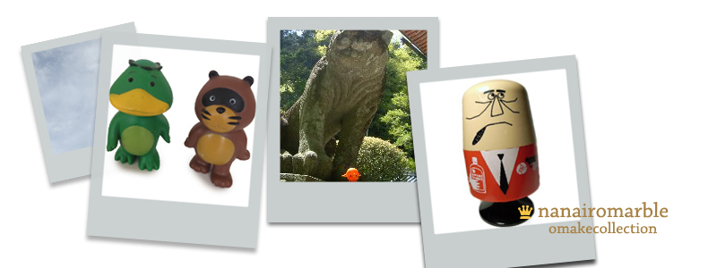

なないろまーぶる
サトちゃん・ピョンちゃんなど、企業の販促品コレクションを掲載しています。
ただいまサイト全体のデザインを変更中です。 見にくいところもありご迷惑をおかけします。
いろいろ溜まったので、すこしずつupします♪
New
2011.01サイトデザインを新しくしました。
2010.10/04 サトちゃんサトちゃんクリップ&メモホルダー
2009.05/26 チキンラーメンひよこちゃん食品ストッカー（小）
2009.05/03 街角マスコット写真募集中